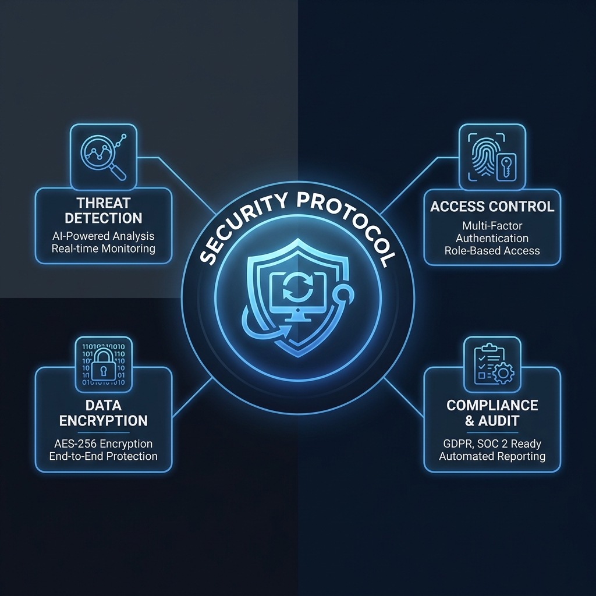

100% local processing
Your files never leave your device. Privacy guaranteed.
Image and PDF tools, right in your browser.
Your files never leave your device. Privacy guaranteed.
No installation or sign-up. Start converting instantly.
Unlimited tools for desktop and mobile web users.
Simple tools for everyday file work
Files are processed entirely in your browser and are never uploaded to our servers. We never see your data.
Client-side secure